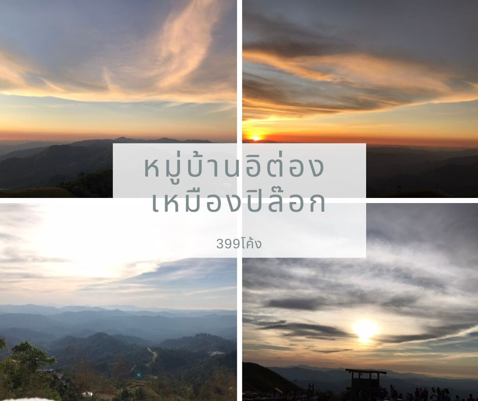
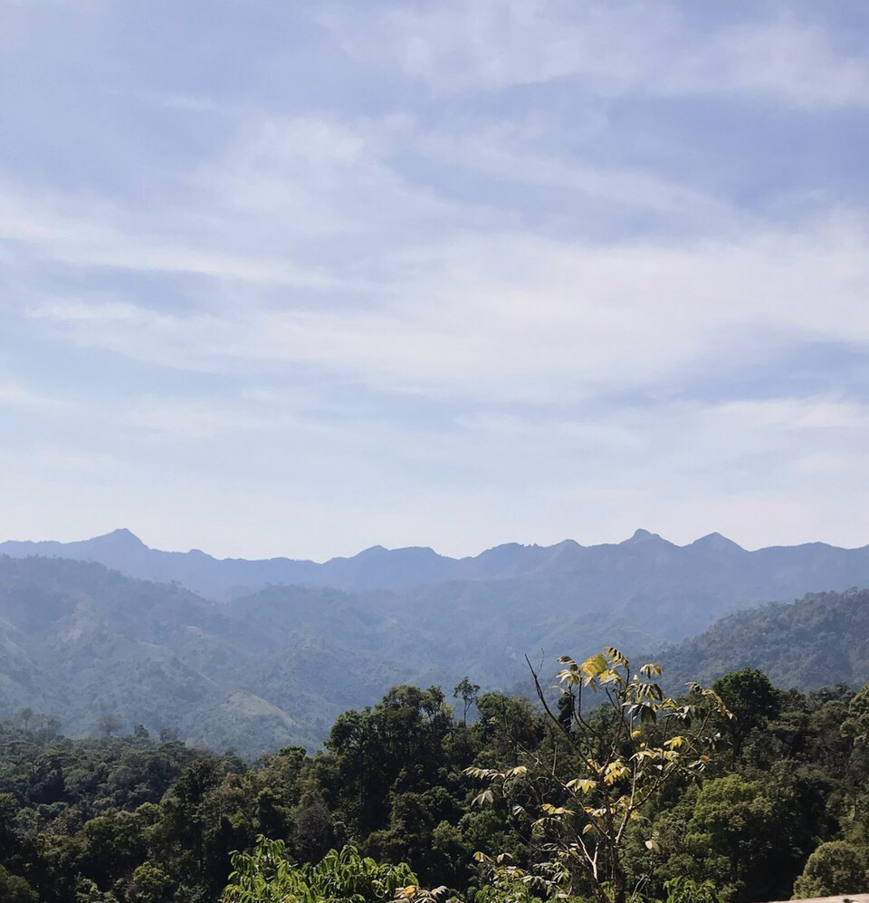
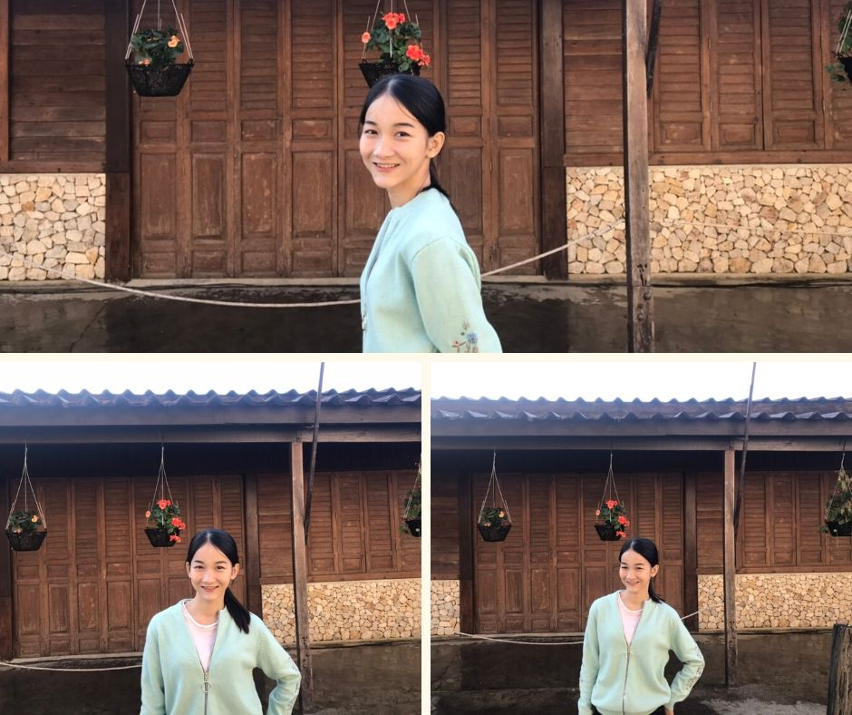
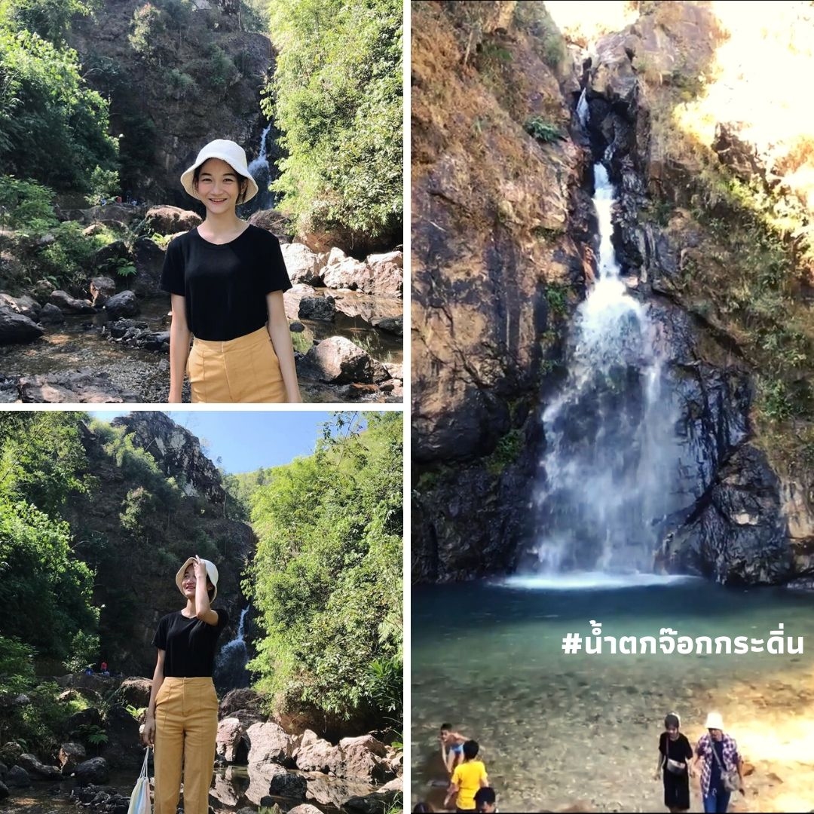
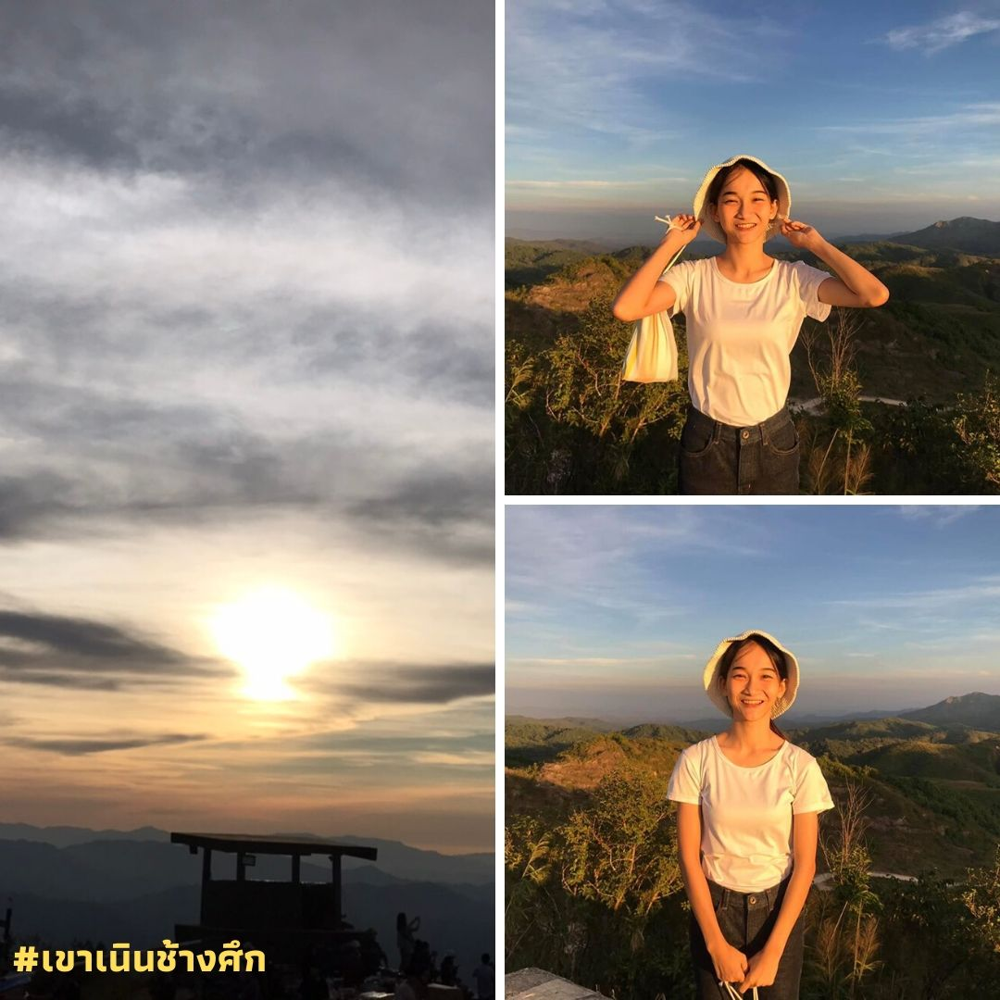
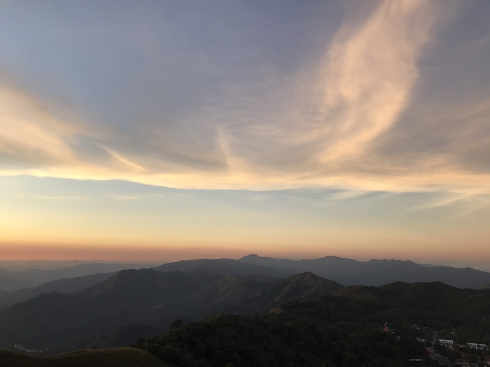

สุดเขตชายแดนทางฝั่ง จ.กาญจนบุรี มีพื้นที่เล็กๆ ที่เคยเจริญรุ่งเรืองในอดีตจากการทำเหมืองแร่ดีบุก
นั่นก็คือ “ปิล๊อก” “ปิล๊อก” มาจากคำว่า “ผีหลอก” มีที่มาที่ไปคือ ในอดีตที่เคยเป็น ดินแดนอันน่ากลัว
มีการล้มตายจากการฆ่าและไข้ป่า โดยเฉพาะช่วงการเปิดเหมืองนั้นได้เกิดการปะทะกันระหว่างตำรวจ
ไทยกับกรรมกรพม่า เพราะไทยห้ามกรรมกรพม่านำแร่ ไปขายให้อังกฤษแต่กรรมกรพม่าฝ่าฝืนจึงเกิด
การปะทะทำให้มีผู้ล้มตายจำนวนมากต่อมาชาวพม่าพูดเพี้ยนเป็น"ปิล๊อก"กลายเป็นชื่อตำบลในเวลาต่อมา

มาได้ครึ่งทางจะมีจุดพักรถก่อนที่จะถึงหมู่บ้าน พร้อมมีวิวสวยๆให้ได้ถ่ายรูปเล่นก่อน

บรรกาศภายในหมู่บ้านเงียบสงบ เป็นชุมชนๆเล็กที่ดูแล้วรู้สึกมีเสน่ห์

ไปเที่ยวน้ำตกกันต่อ มาถึง น้ำตกจ๊อกกระดิ่น น้ำตกเล็กเล็ก แต่น้ำใส
เห็นตัวปลา เป็นน้ำตกที่สวยงามมากๆ ไหลจากช่องของภูเขาด้านบน

จุดชมวิวเนินช้างศึกในยามเย็นนอกจากจะเที่ยวแถวๆ บ้านอีต่องแล้วหาก
มีเวลาก็สามารถแวะเที่ยวที่ “อุทยานแห่งชาติทองผาภูมิ” ที่อยู่ไม่ไกลได้
ด้วยหากมาจากตัว อำเภอ ทองผาภูมิ จะอยู่ก่อนถึง บ้านอีต่อง

ช่องทางมิตรภาพทางฝั่งพม่าส่วนจุดชมวิวสุดสวยของปิล๊อก ต้องยกให้ “จุดชมวิวเนินช้างศึก”
เมื่อขึ้นไปยืนบนนั้นแล้วมองลงมาจะเห็นวิวทิวทัศน์ของขุนเขาแห่งเทือกเขากว้างสุดลูกหูลูกตา
ห้องพักที่อิต่อง